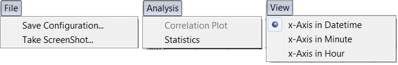
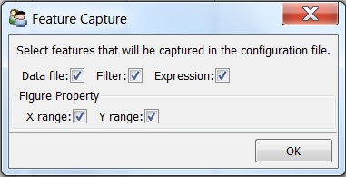
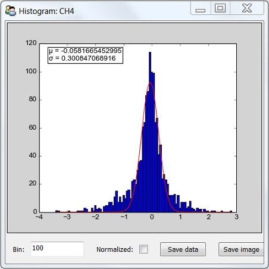

Menus of Time Series Plot¶
File menu¶
Save configuration¶
Save figure properties, expression, filter and other settings into a configuration file so that they can be loaded easily in the future. Properties to be saved are specified in the Figure Capture panel.
Note
If a feature is not captured, it will be omitted when configuration file is loaded.
Depending on features captured, loading configuration file can have different effects. For example:
- If all features are captured, saved workplace is reproduced.
- If Data file is not captured, saved parameters will be applied to data file in the memory.
- If Expression is not captured, plots will not be transformed.
- If X (Y) range is not captured, figures will be auto scaled on x (y) axis.
Take ScreenShot¶
Take a screen shot and save image as a PNG file.
Analysis menu¶
Statistics¶
Calculate mean, standard deviation and peak to peak for all plots in the current window.
Histogram¶
Generate histogram of data as below:
- Red line is a Gaussian function fitted to the histogram. Fitting results of \(\mu\) and \(\sigma\) are shown in the top-left corner of the plot.
- Bin is the number of intervals that the range of value is divided into.
- Normalized: when selected, the sum of the histograms is normalized to 1.
- Save data: save histogram data to a CSV file.
- Save image: save histogram image as a JPEG/PNG/PDF file.
Correlation plot¶
Plot y-axis data in one frame versus that in the other. Enable when two or more frames exist in the current Time Series Plot window. See Correlation/XY Plot for details.
Allan Standard Deviation Plot¶
Make Allan Standard Deviation Plots for data in the current window. See Allan variance for more information.
View menu¶
- x-Axis in DateTime: x-axis data is shown in the datetime format
- x-Axis in Minute: x-axis data is in unit of minute.
- x-Axis in Hour: x-axis data is in unit of hour.
When switching from DateTime to Minute/Hour, x-axis data is substracted by the earliest point shown in the panel, and then converted to desired unit.